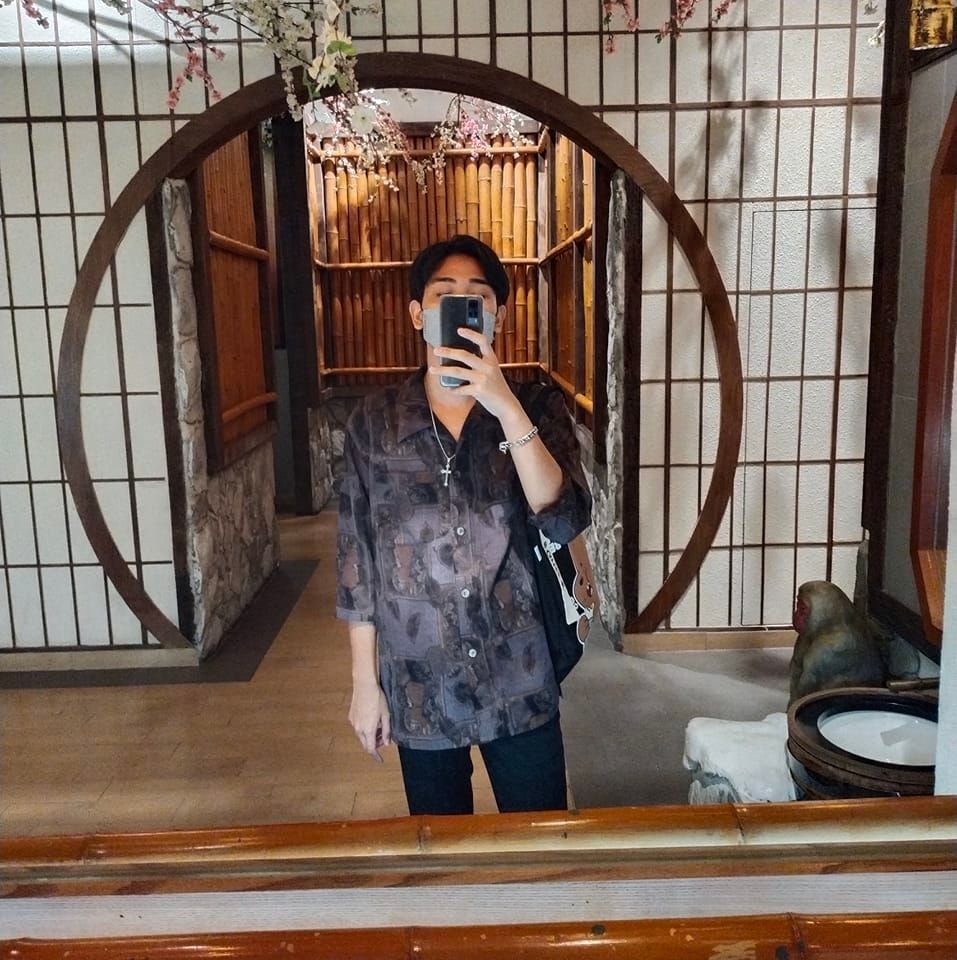

<!DOCTYPE html>
<html>

  <head>
    
<title> แนะนำตัวเอง </title>
<meta charset="UTF-8">
<link rel="icon" type="image/png" href="tool11_122838.png">
</head>
<body img src="https://i0.wp.com/windowscustomization.com/wp-content/uploads/2018/09/flat-earth.gif?fit=750%2C341&quality=80&strip=all&ssl=1" />
 
<h1 style="text-align: left;"><strong>&nbsp;นายสิรวิชญ์ เหรียญแพคงคา </strong></h1>
<h2 style="color:Tomato;text-align: left;"><strong>&nbsp;เกิดวันที่ 15 สิงหาคม ปี 2002 </strong></h2>
<h3 style="text-align: left;"><strong>&nbsp; - เชื้อชาติ ไทย</strong></h3>
<h3 style="text-align: left;"><strong>&nbsp; - สัญชาติ ไทย</strong></h3>
<h3 style="text-align: left;"><strong>&nbsp; - ศาสนา พุทธ</strong></h3>
<h2 style="color:Tomato;text-align: left;"><strong>&nbsp;ข้อมูลการศึกษา &#128513;</strong></h2>
<h3 style="text-align: left;"><strong>&nbsp; - มหาวิทยาลัยราชภัฏพระนคร สาขาอิเล็กทรอนิกส์คอมพิวเตอร์</strong></h3>
  
  
  <a href="https://pnru.ac.th"> </a><br>
  
<h2 style="color:Tomato; text-align: left;"><strong>&nbsp; งานอดิเรก &#128516;</strong></h2>
<h3><em><strong>&nbsp; - ดูหนัง / ฟังเพลง / เล่นเกม / อ่านการ์ตูน</strong></em></h3>

 
  
  <br><br><br>
  
    <br><br><br>
 

  🌍  I'm based in Bangkok , Thailand <br>
  ✉️  You can contact me at  sirawit.15copter@gmail.com<br>
  🧠  I'm learning Phranakhon Rajabhat University<br>
  ⚡  ชอบที่จะได้ไปท่องเทียวที่ต่าง ชอบที่จะทำอาหารอ่างหนังสือยามว่าง<br><br>
  <br>
  
 <h1 style="text-align: left;"><strong> Skills  </strong></h1>


<p align="left">
<a href="https://docs.microsoft.com/en-us/cpp/?view=msvc-170" target="_blank" rel="noreferrer"></a>
<a href="https://docs.microsoft.com/en-us/cpp/?view=msvc-170" target="_blank" rel="noreferrer"></a>
<a href="https://docs.microsoft.com/en-us/dotnet/csharp/" target="_blank" rel="noreferrer"></a>
<a href="https://git-scm.com/" target="_blank" rel="noreferrer"></a>
<a href="https://www.python.org/" target="_blank" rel="noreferrer"></a>
<a href="https://getbootstrap.com/" target="_blank" rel="noreferrer"></a>
<a href="https://www.w3.org/TR/CSS/#css" target="_blank" rel="noreferrer"></a>
<a href="https://developer.mozilla.org/en-US/docs/Glossary/HTML5" target="_blank" rel="noreferrer"></a>
<a href="https://www.mysql.com/" target="_blank" rel="noreferrer"></a>
<a href="https://store.arduino.cc/?gclid=Cj0KCQjw2eilBhCCARIsAG0Pf8uueBifykWcsSS4LPESeGQfxGVKJYnzV7bz471XfknQJy_1VINVWM8aAkLtEALw_wcB" target="_blank" rel="noreferrer"></a>
<a href="https://www.docker.com/" target="_blank" rel="noreferrer"></a>
<a href="https://www.adobe.com/uk/products/photoshop.html" target="_blank" rel="noreferrer"></a>
<a href="adobe.com/uk/products/illustrator.html" target="_blank" rel="noreferrer"></a>
<a href="https://www.adobe.com/uk/products/premiere.html" target="_blank" rel="noreferrer"></a><br>
</p>
  
 <h1 style="text-align: left;"><strong>  Socials </strong></h1>

<p align="left"> <a href="https://www.facebook.com/profile.php?id=100010493555830" target="_blank" rel="noreferrer"></a> <a href="https://www.github.com/copter15" target="_blank" rel="noreferrer"></a> <a href="https://www.youtube.com/c/UC9UvRO3NGCi4v9l2r7UBxtg" target="_blank" rel="noreferrer"></a></p><br><br>

 <h1 style="text-align: left;"><strong>My GitHub Stats</strong></h1>

<a href="http://www.github.com/copter15"></a><br>

<a href="http://www.github.com/copter15"></a><br><br>
  
  <p><iframe src="https://www.youtube.com/embed/9EDZixuODrw?controls=0" width="420" height="315"></iframe></p>


  </body>
</html>